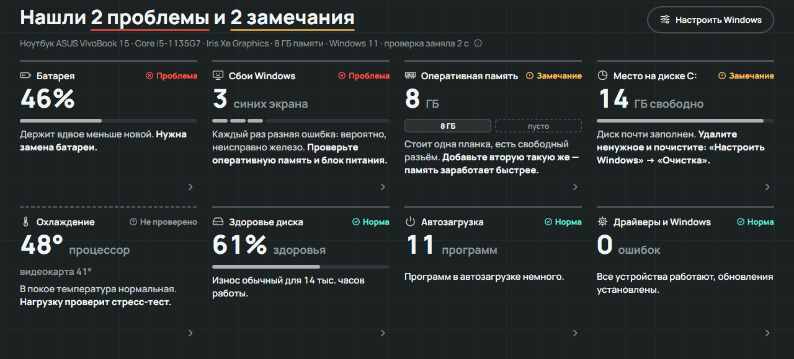

Что не так с компьютером — понятно за минуту
Checkup проверит батарею, диски, память, температуру и сбои Windows и простыми словами скажет, что делать. Бесплатно, без рекламы и регистрации.

Что проверяет
Восемь пунктов, у каждого — вывод и совет. Нажмёте на блок — увидите подробности.
Батарея
Сколько осталось от новой и не пора ли менять. Для ноутбуков.
Сбои Windows
Синие экраны и внезапные выключения: когда были и что, вероятно, виновато.
Оперативная память
Сколько стоит, есть ли свободные разъёмы и хватает ли её.
Место на диске
Сколько свободно на диске C: и что можно почистить.
Охлаждение
Температура процессора и видеокарты — в покое и под нагрузкой.
Здоровье диска
Износ и ошибки SSD и жёстких дисков — пока данные целы.
Автозагрузка
Что запускается вместе с Windows и замедляет включение.
Драйверы и Windows
Устройства с ошибками, обновления, активация и антивирус.
И стресс-тест
Нагрузит процессор и видеокарту на несколько минут и покажет на графике, не перегревается ли компьютер. Станет слишком горячо — остановится сам.
Без сюрпризов
Ничего не меняет без вашего нажатия
Проверка только смотрит. Настройки Windows и драйвер датчиков программа ставит лишь после вашего нажатия, а кнопка «Вернуть как было» возвращает их назад. Очистка диска — исключение: удалённые ею временные файлы не вернуть.
Ничего не отправляет
Ничего не собирает и не отправляет о компьютере. В интернет заглядывает только узнать, не вышла ли новая версия. Работает и без интернета.
Бесплатно
Без рекламы, регистрации и пробных периодов. Установка не нужна.
Как запустить
- Скачайте и распакуйте архивБраузер может написать, что файл «редко скачивают» или «может быть опасным»: у программы нет платной цифровой подписи. Выберите «Сохранить» (в некоторых браузерах — «Всё равно сохранить»). Потом правой кнопкой по файлу → «Извлечь всё».
- Откройте папку Checkup и запустите Checkup.exeWindows спросит разрешение и напишет, что издатель неизвестный, — это из-за той же отсутствующей подписи. Нажмите «Да». Без прав администратора программа не видит датчики и диски.
- Если появилось синее окно «Система Windows защитила ваш компьютер»Нажмите «Подробнее» → «Выполнить в любом случае». Так Windows встречает новые программы без платной цифровой подписи.
Частые вопросы
Антивирус ругается на программу
Чтобы видеть температуру, Checkup ставит драйвер датчиков PawnIO — только когда вы сами нажмёте «Включить датчики». Некоторые антивирусы настороженно относятся к таким драйверам. Кроме того, сам файл Checkup.exe не подписан, собирается в один файл и просит права администратора — по этим признакам антивирус тоже может его заподозрить.
Не отключайте защиту целиком. Если антивирус убрал файл, верните его из карантина и добавьте в исключения только папку Checkup на этом компьютере — и только если контрольная сумма архива (внизу страницы) совпала. Сомневаетесь — напишите мне.
Windows пишет, что приложение заблокировано
На некоторых новых компьютерах с Windows 11 включена «Интеллектуальная система управления приложениями», и она не пускает программы без подписи; кнопки «Выполнить в любом случае» при этом нет.
Обойти её для одной программы нельзя: функция работает для всего компьютера сразу. Если её выключить, Windows защищает компьютер слабее, а на старых версиях Windows 11 включить её обратно, по сведениям Microsoft, можно только переустановкой системы (на свежих обновлениях — в настройках). Решайте сами и, если не уверены, сначала напишите мне.
Нужен ли интернет?
Нет. Скачали один раз — дальше программа работает без интернета. С интернетом она при запуске узнаёт на этом сайте, не вышла ли новая версия: читает только номер версии и ничего не скачивает.
Как удалить?
Если программа что-то меняла, сначала нажмите в ней «Вернуть как было». Потом удалите папку Checkup. Кое-что остаётся и после этого: пока программа работает, она распаковывает свои файлы (около 10 МБ) во временную папку Windows (%TEMP%\.net) — их можно удалить вручную или очисткой диска. А драйвер датчиков PawnIO, если вы его включали, остаётся в Windows, пока вы не нажмёте «Вернуть как было».
Что-то сработало не так
В программе справа вверху есть кнопка «Сообщить об ошибке»: она соберёт сведения о компьютере, а вы отправите их мне в Telegram. Сама программа ничего не отправляет.